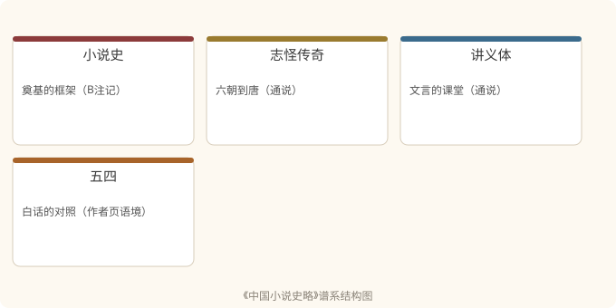

中国小说史略
一、基本信息
| 作者 | 鲁迅 |
|---|---|
| 成书/出版 | 1923-24年（作者页注记：Britannica——中国小说史略 (1923—24)——'中国小说史研究的奠基之作'） Lu Xun — Encyclopaedia Britannica（百科全书） |
| 国别/地区 | 中国 |
| 时代 | 近代 · 20世纪20年代初 |
| 体裁 | 学术专著 |
| 语言 | 汉语（文言） |

《中国小说史略》谱系结构图（主题·结构图）
二、创作背景
作者页注记：中国小说史略 (1923-24)——'中国小说史研究的奠基之作（Britannica）'。
Britannica：鲁迅——现代中国文学奠基人（作者页语境）。
题材（通说待核）：28篇的讲义——从神话传说到清末谴责小说。
三、内容脉络
（通说待核）讲义体：神话→六朝志怪→唐传奇→宋话本→明清小说。
（通说待核）'史略'的分期框架。
四、主要人物表
| 人物 | 身份 | 说明 |
|---|---|---|
| （学术专著无人物） | —— | 文学史 |
五、主题与艺术特点
- 小说史的开创（B注记：奠基之作）。
- 文言讲义体（通说待核）。
- 明清小说的谱系（《红楼梦》论——通说待核）。
六、影响与评论
- Britannica：'奠基之作'（作者页注记）。
Lu Xun — Encyclopaedia Britannica（百科全书） - Britannica：鲁迅《狂人日记》为现代小说开端（作者页交叉——待核）。
Lu Xun — Encyclopaedia Britannica（百科全书）
七、阅读建议
难点
- 文言讲义体。
- 古代小说的版本知识。
- 《中国小说史略》（人民文学出版社《鲁迅全集》等——通说待核）。
- 1923-24年北大讲义本说待核。
鲁迅学术首选；与《中国小说的历史的变迁》对读。
八、待核实
- 28篇结构核对（通说）。
- 1923-24年出版（北大新潮社说）待核。
- '奠基之作'评价出处核对。